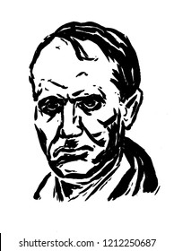

Les plus beaux poèmes de Baudelaire.

Dance Macabre:
Elle a la nonchalance et la désinvolture
D’une coquette maigre aux airs extravagants.
Vit-on jamais au bal une taille plus mince ?
Sa robe exagérée, en sa royale ampleur,
S’écroule abondamment sur un pied sec que pince
Un soulier pomponné, joli comme une fleur.
La ruche qui se joue au bord des clavicules,
Comme un ruisseau lascif qui se frotte au rocher,
Défend pudiquement des lazzi ridicules
Les funèbres appas qu’elle tient à cacher.
Ses yeux profonds sont faits de vide et de ténèbres,
Et son crâne, de fleurs artistement coiffé,
Oscille mollement sur ses frêles vertèbres.
Maintenant voici un interpretation d'un de ses poemème L'horloge de Mylène Farmer:ici
L'Albatros
Souvent, pour s’amuser, les hommes d’équipage
Prennent des albatros, vastes oiseaux des mers,
Qui suivent, indolents compagnons de voyage,
Le navire glissant sur les gouffres amers.
A peine les ont-ils déposés sur les planches,
Que ces rois de l’azur, maladroits et honteux,
Laissent piteusement leurs grandes ailes blanches
Comme des avirons traîner à coté d’eux.
Ce voyageur ailé, comme il est gauche et veule!
Lui, naguère si beau, qu’il est comique et laid!
L’un agace son bec avec un brûle-gueule,
L’autre mime, en boitant, l’infirme qui volait!
Le Poète est semblable au prince des nuées
Qui hante la tempête et se rit de l’archer;
Exilé sur le sol au milieu des huées,
Ses ailes de géant l’empêchent de marcher.
ici moi